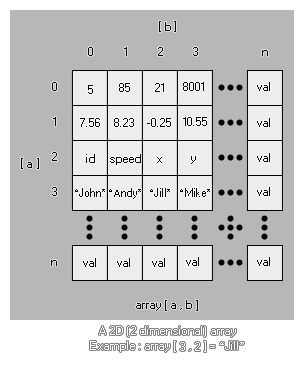

Las matrices pueden parecer confusas al principio, pero pueden ser extremadamente útiles y son una parte esencial de la creación de juegos. ¿Por qué? Bueno, aquí hay algunas cosas que serían imposibles sin arreglos -
- Menús. Una matriz o dos pueden hacer que sea mucho más fácil crear un buen sistema de menú.
- Juegos de rol Las matrices son esenciales para hacer juegos de rol, porque en lugar de tener un revoltijo de variables, solo tienes unas pocas líneas, que puedes consultar en cualquier momento.
- Juegos de cartas. ¡Bueno para llevar un registro de las cartas y las manos e incluso se puede barajar!
- Puntuaciones altas y otras estadísticas. Mucho más fácil hacer un seguimiento de una matriz que múltiples variables.
Esa es solo la punta del iceberg, ya que las matrices son una de las herramientas de programación más fundamentales y útiles que puedes utilizar, y te sorprenderían las aplicaciones que pueden tener. Existen diferentes tipos de matriz disponibles para usar en GML y se describen en las siguientes secciones:
De acuerdo, podemos usar una matriz para las cosas mencionadas anteriormente, pero ¿qué es una matriz? Cómo se ve? Bueno, algo como esto...
array[0] = 1.25;
Esta es una matriz 1D (unidimensional) de la que ahora vamos a descomponer las partes de para ver lo que significa:
array
Este es el nombre de la matriz. Al igual que cualquier otra variable, puede ser cualquier cosa que desee, desde simplemente "a" hasta "mymumscow".
[0]
Esta es la posición dentro de la matriz que estamos verificando o cambiando. Verá, una matriz es básicamente un contenedor con un número de espacios para almacenar valores, y cada posición en el contenedor tiene un número específico para identificarlo, que es lo que ponemos en []. Vale la pena señalar que una matriz siempre comienza en 0 y nunca puede ser negativa. Ahora expandamos nuestra matriz para incluir diferentes posiciones...
array[2] = 0;
array[1] = 0;
array[0] = 0;Nuestra matriz ahora contiene tres posiciones (0, 1 y 2) y hemos inicializado nuestra matriz a 0. ¿Qué significa eso? Bueno, una matriz tiene que ser inicializada antes de que podamos usarla o GameMaker Studio 2 nos dará un error. Inicializar una matriz solo significa que le damos a cada posición de la matriz un valor inicial en preparación para que se use en otra parte del objeto o código. Esto es importante de recordar, ya que significa que tienes que hacer una cierta cantidad de planificación antes de usar arreglos, pero es bastante fácil inicializar uno usando un ciclo de repetición como este...
var i = 9;
repeat(10)
{
array[i] = 0;
i -= 1;
}Este código simple inicializará una matriz de diez posiciones (0-9) a 0, en el sentido de que cada posición en la matriz contiene el valor 0. Notarás que la matriz se ha inicializado hacia atrás, definiendo primero el último valor. Esto no es estrictamente necesario, pero es la forma óptima de hacerlo, ya que reservará un espacio en la memoria que es el tamaño exacto de la matriz, mientras que si inicializa una matriz de 0 hacia arriba, la memoria debe reasignarse para cada valor agregado adicional La diferencia de velocidad es insignificante para matrices más pequeñas, pero las más grandes deben optimizarse tanto como sea posible de esta manera.
Pero, ¿y si queremos inicializar la matriz con diferentes valores para cada posición? Bueno, para eso tenemos que escribir manualmente todas y cada una de las posiciones, ¡pero hay un buen truco para ayudarnos a hacer un seguimiento de las cosas allí también!
count = 3;
array[count] = "you?"
count -= 1;
array[count] = "are "
count -= 1;
array[count] = "How "
count -= 1;
array[count] = "Hello!"
count -= 1;Como puede ver, no hemos utilizado ningún número en la matriz real, sino una variable para realizar una cuenta regresiva a través de los valores. Esto tiene dos ventajas: una, no tenemos que preocuparnos por errores ortográficos o errores al escribir las posiciones de la matriz, y dos, tenemos en la variable "contar" el número de posiciones que contiene la matriz, que luego puede usarse en otro lugar en el objeto. ¡Muy útil!
Finalmente puede asignar los valores a una matriz usando una sola llamada de variable como esta:
var a = [0, 1, 2, 3, 4];
var b = [];Lo anterior creará dos matrices como variables locales, la primera ya está poblada con 5 elementos y la segunda como una matriz vacía lista para tener valores agregados.
Con eso hecho, ¿cómo utilizamos una matriz para cosas prácticas? Exactamente lo mismo que utilizaríamos una variable normal, como se muestra en los siguientes ejemplos:
total = array[0] + array[5]; //Add two array values together
if (array[9]) == 10 //Check an array value
{
//do something
}
draw_text(32, 32, array[3]); //draw an array valueComo las matrices están numeradas consecutivamente, esto significa que puede recorrerlas para realizar acciones adicionales, como lo hicimos para inicializarla:
var total = 0;
for (var i = 0; i < 10; i++;)
{
total += array[i];
draw_text(32, 32 + (i * 32), array[i]);
}
draw_text(32, 32 + (i * 32), total);El código anterior sumará todos los valores en nuestra matriz, dibujará cada uno de ellos y dibujará el valor total al final.
Ahora que sabemos cómo es una matriz normal, veamos una matriz 2D (bidimensional). 
array[0, 0] = 5;
Como antes, cada número apunta a una posición dentro de la matriz, solo que esta vez cada posición tiene una coordenada "a" y "b". Piense en ello como una dimensión extra en nuestro contenedor, ya que ahora tiene alto y ancho, mientras que el conjunto 1D solo tiene altura. Aquí hay un ejemplo extendido:
array[1, 2] = 1;
array[1, 1] = "hello";
array[1, 0] = 55.5;
array[0, 2] = sprite_index;
array[0, 1] = "world";
array[0, 0] = -67.89;Una matriz 2D necesita inicializarse antes de su uso, al igual que una matriz 1D, y puede contener números reales, cadenas y constantes, como cualquier otra variable, lo que los convierte en candidatos ideales para cualquier juego que necesite almacenar grandes cantidades de datos en un de manera fácilmente accesible (recuerde, puede recorrer fácilmente una matriz). Aquí hay un último ejemplo de cómo se puede usar esto en un juego real... Digamos que quiere engendrar cuatro enemigos diferentes en cuatro puntos diferentes de su juego dependiendo de un valor aleatorio. Bueno, podemos usar una matriz 2D para hacer esto y guardar la escritura de una carga de código.
Primero debemos inicializar la matriz que vamos a utilizar en el evento create de nuestro objeto "controlador" (observe el uso de comentarios para recordarle lo que hace cada entrada de matriz):
enemy[3, 2] = 448; //y position
enemy[3, 1] = 32; //x position
enemy[3, 0] = obj_Slime; //Object
enemy[2, 2] = 448;
enemy[2, 1] = 608;
enemy[2, 0] = obj_Skeleton;
enemy[1, 2] = 32;
enemy[1, 1] = 608;
enemy[1, 0] = obj_Knight;
enemy[0, 2] = 32;
enemy[0, 1] = 32;
enemy[0, 0] = obj_Ogre;Ahora tenemos los objetos para generar instancias de y sus correspondientes coordenadas de generación xey en la sala, todo almacenado en nuestra matriz. Esto ahora se puede usar de la siguiente manera en otro evento del objeto controlador (una alarma, por ejemplo, o un evento de pulsación de tecla):
var i;
i = irandom(3); //get a random number from 0 to 3, inclusive
instance_create_layer(enemy[i, 1], enemy[i, 2], enemy[i, 0], "Enemy_Layer"); //Use the array to create the objectEse código corto ahora engendrará un enemigo aleatorio en la sala de juegos, y usa mucho menos código que una estructura "if / then / else" o incluso un "switch", y como la matriz se inicializa en el evento create es MUCHO más fácil de editar y cambiar cualquiera de esos valores ya que no están codificados en el resto de los códigos objeto. También vale la pena señalar que la longitud de cada matriz 2D puede ser diferente, por lo que puede tener una matriz con una altura de 2, pero la entrada 0 podría ser de 2, la entrada 1 podría ser de 4 y la entrada 2 podría ser 3 en longitud:
array[0, 0] = 1;
array[0, 1] = 2;
array[1, 0] = "one";
array[1, 1] = "two";
array[1, 2] = "three";
array[1, 3] = "four";
array[2, 0] = "1";
array[2, 1] = "2";
array[2, 2] = "3";
Al igual que las variables normales, puede pasar las matrices a los scripts que se usarán y luego regresar a la instancia que llamó al script. Para hacer esto, simplemente tiene que especificar la variable de matriz (sin necesidad de cada una de las entradas individuales, ni los corchetes []) y la matriz se pasará por referencia al script. Sin embargo, si cambia alguno de los valores de matriz, la matriz se copiará en una matriz temporal solo para la secuencia de comandos. Tenga en cuenta el uso de la palabra temporal aquí! En realidad, no está transfiriendo la matriz misma al script (como lo haría con una variable), sino que solicita que el script cree una copia de este conjunto, que cambiará en el script. Esto significa que siempre debe devolver la matriz desde la secuencia de comandos si desea cambiar cualquier valor de matriz.
NOTA: Debido a la forma en que esto funciona internamente, pasar matrices a las secuencias de comandos puede afectar el rendimiento, especialmente si la matriz es muy grande. ¡Así que usa esta funcionalidad con cuidado!Como ejemplo, considere el siguiente código. Primero creamos la matriz que queremos usar, y luego pasamos esa matriz a la secuencia de comandos:
for (var i = 9; i > -1; i--;)
{
a[i] = i;
}
scr_Return_Array(a);El script en sí es algo simple como:
for (var i = 9; i > -1; i--;)
{
a[i] = i * 100;
}Ahora esperaría que la matriz final tenga los valores 900, 800, 700, etc. PERO este no será el caso, ya que no devolvimos la matriz del script, así que todo lo que cambiamos fue la copia temporal que era creado cuando pasamos el conjunto como un argumento en el script. Para rectificar esto, deberíamos haber formateado el código de la siguiente manera:
for (var i = 9; i > -1; i--;)
{
a[i] = i;
}
a = scr_Return_Array(a);Y el script debería verse así:
for (var i = 9; i > -1; i--;)
{
argument0[i] = i * 100;
}
return argument0;NOTA: Lo anterior no es necesario si no está cambiando ninguno de los valores de la matriz, sino simplemente haciendo referencia a ellos. Hacer referencia a una matriz no la copiará y será más rápido de analizar.También puede eliminar una matriz simplemente "reasignando" la variable que la define a un único valor. Esto liberará la memoria asociada con todas las entradas y valores para esa matriz. Por ejemplo:
//Create the array for (var i = 9; i > -1; i--;)
{
a[i] = i;
}
//Delete the array a = 0;También vale la pena señalar que puede usar el accesorio @ hacer referencia a una matriz desde una secuencia de comandos y cambiar sus valores directamente, lo que ahorra la sobrecarga de la CPU al copiarla en la secuencia de comandos. Puede encontrar más información sobre los accesores y cómo funcionan, junto con un ejemplo para las matrices, de la siguiente página:

Funciones de matriz
Hay algunas funciones asociadas con el uso de matrices también. Estos están diseñados para darle flexibilidad en su código, y le permitirán crear matrices más dinámicas y funcionales al hacer sus juegos. Estas funciones son: